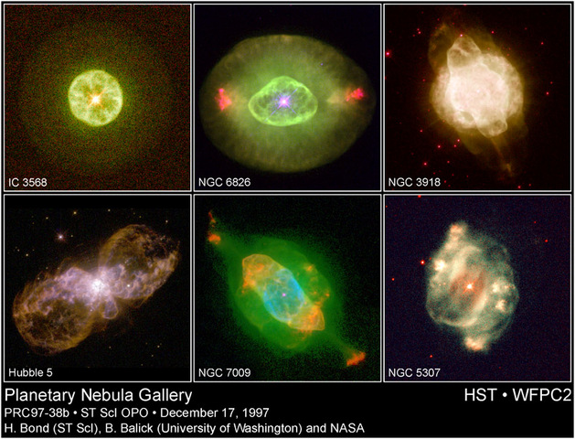

Planetary nebulae (PN) represent the last stages of evolution for low- and intermediate-mass stars whose Main Sequence mass was less than about 8 solar masses. After evolving through the Asymptotic Giant Branch (AGB) on the Hertzsprung-Russell diagram, a phase characterised by shell burning resulting in radial pulsations that drive prodigious mass-loss, these stars possess thick, dusty, molecular circumstellar envelopes. In the rapid (few x 1000 yr) post-AGB or proto-planetary nebula (PPN) phase, the mass loss drops dramatically and the circumstellar envelope detaches from the star. The ejection of the envelope exposes the evolving progenitor star which is increasing in temperature and on its way to becoming a white dwarf. Once the central star temperature reaches ~30,000 K, it emits most of its radiation in the ultraviolet region. This radiation ionises the remnant circumstellar envelope, producing the optically-visible planetary nebula. The planetary nebula is still expanding however, and eventually its material will disperse into space, leaving the exposed white dwarf.
The term ‘planetary nebula’ is something of a misnomer, with historical origins. When these objects were first discovered, their apparent disk-like structure and similarity to the outer planets of Uranus and Neptune led to their mistaken link with planets. The first PN discovered was Messier 27 (M27), the Dumbbell, catalogued by Charles Messier in 1784.
Research on PN advanced significantly with the advent of the Hubble Space Telescope, which revealed their exquisite structures in unprecedented detail. PPN and PN often display complex morphologies with extreme bipolarity, multipolar structures, high-velocity (~100s km/s) outflows and point-symmetric features. These characteristics are thought to arise due to a post-AGB evolutionary process that involves the effects of a binary central system, or a local stellar magnetic field, or both. The Helix nebula, (NGC 7293) is one of the most well known PN.

Credit: H. Bond (ST ScI), B. Balick (Univ. Washington) and NASA